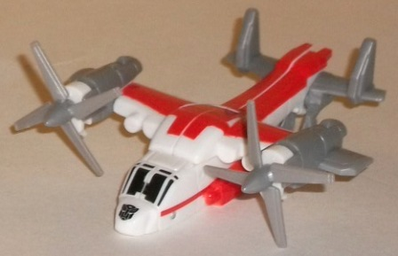
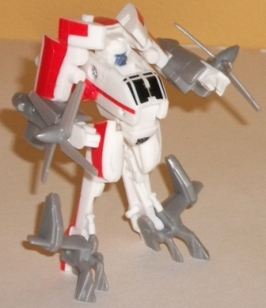
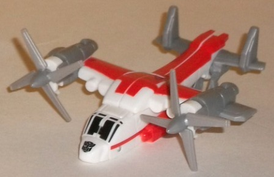
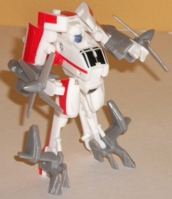
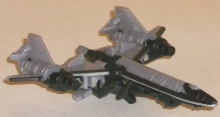
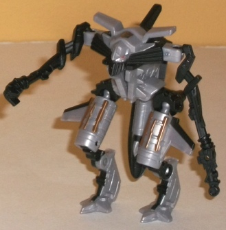
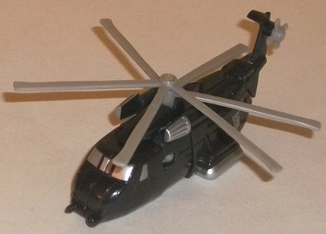
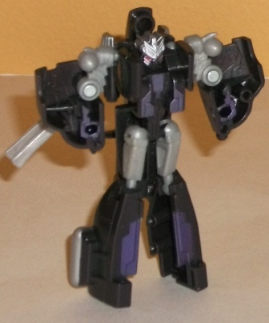
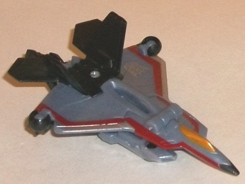
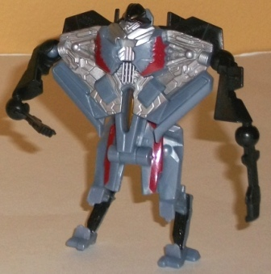

 
Allegiance : Autobot
Size : Legend
Difficulty of Transformation : Very Easy
Color Scheme : White, light milky gray, light red, and some black and light metallic silvery blue
Individual Rating : 7.8
 War
for the Skies (K-Mart Exclusive)
War
for the Skies (K-Mart Exclusive)
Price
: ~$20 U.S.
Overall Rating
: 6.5
(NOTE: Because this set is composed of repaints,
this is not a full-blown review. This mainly covers any changes made to
the set and the color scheme, and merely compares it to the original versions
of these molds. For a review on RotF Legends Springer, the mold used for
Autobot Blades, go
here
. For a review
on the original mass-release RotF Legends Jetfire mold, go
here
.
For a review on TF1 Legends Blackout, the mold used for Spinister, go
here
.
For a review on TF1 Legends Starscream, the mold used for Thundercracker,
go
here
.)
 Autobot
Blades
Autobot
Blades


Allegiance
: Autobot
Size
: Legend
Difficulty of Transformation
: Very
Easy
Color Scheme
: White, light milky
gray, light red, and some black and light metallic silvery blue
Individual Rating
: 7.8
Blades here is a bit
of an homage to the G1 Protectobot of the same name, being a red-and-white
helicopter and all. Granted, this time around he's not exactly a rescue
helicopter, but still. The light red and white contrast against each other
excellently, even if it's hardly a unique color scheme for an Autobot.
The usage of the red on almost all of the top of the helicopter mode may
have been a minor mistake, however, given that even the minor "white" unpainted
cracks in the top due to the transformation show like sore thumb against
the red. The light gray is... meh, it's been used to death on a lot of
the movie toys in particular. Still, it doesn't clash with the other colors,
to be sure, and it's not used so much where it makes the whole toy dull.
The light silvery blue is a nice shade for the face-- I wish it was used
elsewhere on the toy, but it looks like almost all of the paint budget
was devoted to the vehicle mode.
No mold changes have
been made to RotF Blades.
 Jetfire
Jetfire


Allegiance
: Autobot
Size
: Legend
Difficulty of Transformation
: Very
Easy
Color Scheme
: Black, milky light
gray, and some pale metallic bronze and light red
Individual Rating
: 7.2
The main change in the
color scheme with this Legends class Jetfire compared to the previous one
is that this one has a lot more gray on it. It's a minor change-- and it's
not exactly an exciting color change-- but it helps him from looking quite
so "all black" in vehicle mode. Granted, he is a BLACKbird, but it helps
quite a bit to make him look more visually interesting in vehicle mode.
In robot mode he already had gray in the original version so now he just
has more of it. No big deal there. I do really like the metallic bronze
detailing used on his engine-hips, though-- I really wish THAT color had
been used a LOT more on ol' Jetfire here. That would've been a sight-worthy
Legend class figure indeed.
No mold changes have
been made to this Legends class version of RotF Jetfire.
Spinister


Allegiance
: Decepticon
Size
: Legend
Difficulty of Transformation
: Very
Easy
Color Scheme
: Charcoal black, light
milky gray, and some silver, light metallic purple, and cherry red
Individual Rating
: 7.2
Spinister-- now THERE'S
an awesome TF name I never thought I'd see used officially again. Other
than being a Decepticon helicopter though, it doesn't share any relation
to G1 Spinister-- the color scheme is completely different. RotF Spinister
has a more traditional Decepticon-y charcoal black and silver/gray. I've
always thought black as a main color looks fairly good, but it really needs
to be accented with the right amount of other colors, and light milky gray
is... okay, but not exactly the kinda colors I'm looking for. Now, if it
was all silver accents, which look great against the black, and there were
more of them? Sure. And if he had more of that nice metallic light purple
he has just a touch of in robot mode? Even better! But as it is, his vehicle
mode just looks kinda boring. (His robot mode less so because of the increased
use of non-black colors and the nice addition of the purple.)
No mold changes have
been made to RotF Spinister.
Thundercracker


Allegiance:
Decepticon
Size
: Legend
Difficulty of Transformation
: Very
Easy
Color Scheme
: Black, pale pearly
blue, and some silver, metallic bronzish yellow, and dark red
Individual Rating
: 3.6
It's Thundercracker--
as usual, an homage to the
G1 Starscream
redeco
, this time being a repaint of the Legends Starscream mold. He
has the signature red stripes, which really add quite a bit to the vehicle
mode in terms of making it more eye-catching, and they contrast quite well
against the very nice shade of pearly blue that's used for most of his
plastic. I wish this particular shade of blue was used on more toys, it's
a lot more eye-catching than the blue used for Thundercracker most other
times. The black also goes great against the blue, too. Given that the
silver paint is actually silver and not that blah shade of light milky
gray, it works quite well here, too. It all ends up making Thundercracker
look quite visually interesting-- too bad about the mold, though.
No mold changes have
been made to RotF Thundercracker.
Overall the "War for the Skies" pack is an interesting contrast in how important molds are versus the paint jobs. Out of the four, only Thundercracker is a stinker of a mold-- the other three are quite good for Legends class figures. Unfortunately, as far as paint schemes go, it's the opposite-- Thundercracker is the most eye-catching, but the other three have paint jobs ranging from "merely okay" to rather boring (but not awful or clashy). So, if you want a nice Legends versus pack and the molds matter to you more than the paint jobs, this is a mildly recommended pick-up. If interesting paint jobs matter more though, I'd avoid these and get one of the individually packed molds of the three good ones in this set instead.
Reviews by Beastbot